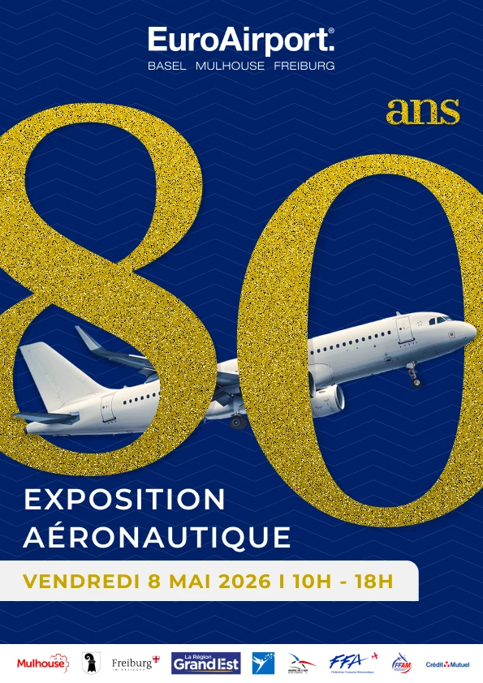
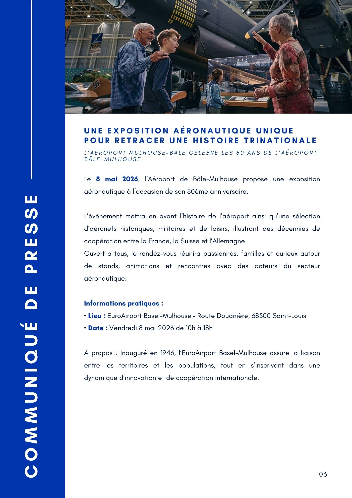
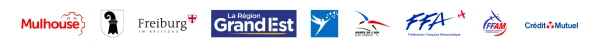
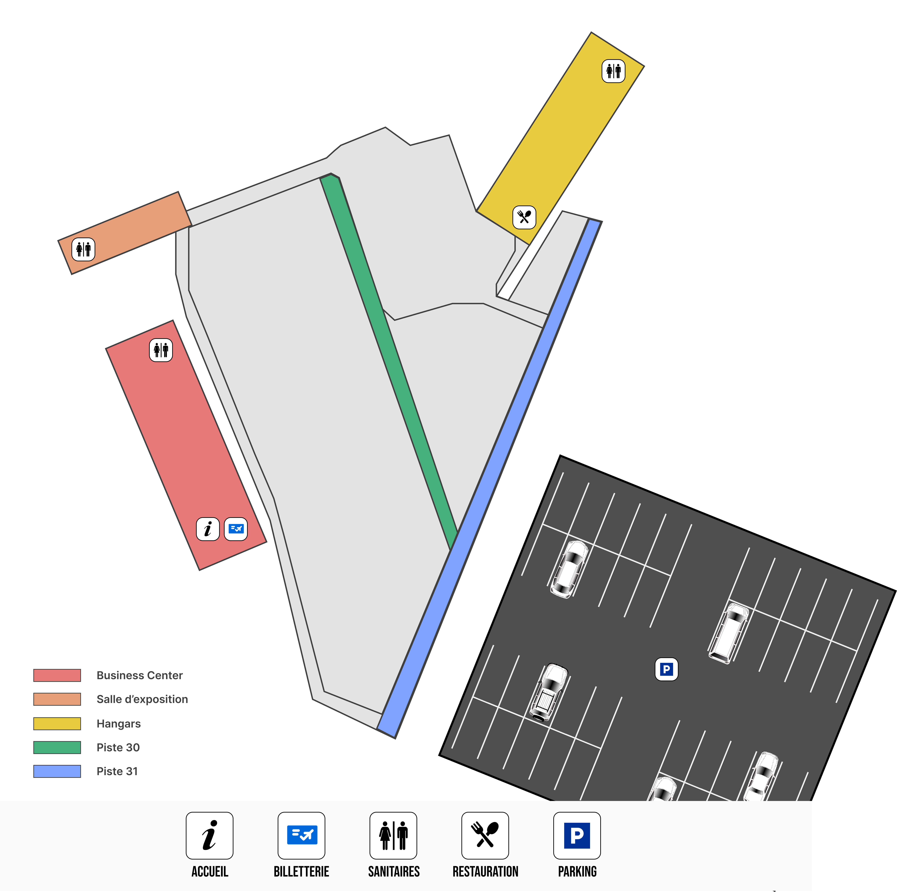
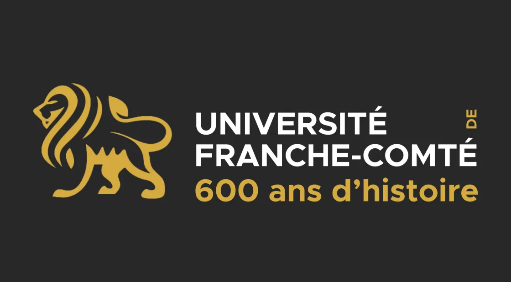
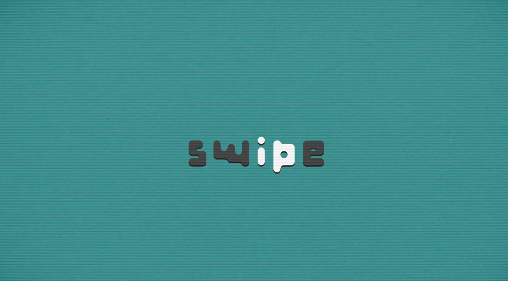
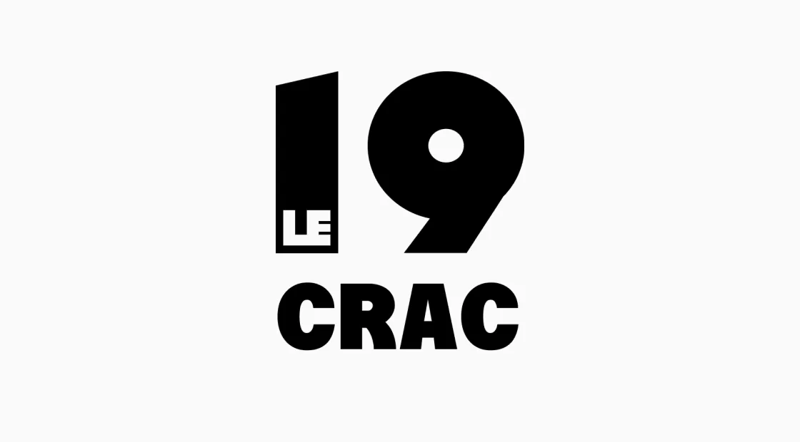

Université de Franche-Comté : 600 ans d’histoire
Proposition d'un logo pour les 600 ans de l'Université de Franche-Comté
En savoir plus

Réalisé en 2025, il s'agit de l'organisation d'un évènement fictif à l'occasion des 80 ans de l'Aéroport Bâle-Mulhouse.

"Depuis 1946, l’Aéroport de Bâle-Mulhouse occupe une place singulière en Europe grâce à son statut binational et à son ancrage trinational. Pour célébrer ses 80 ans, il propose une exposition qui retrace l’évolution de l’aviation civile et militaire dans la région. L’événement réunit des appareils historiques, des associations locales et des représentants institutionnels pour offrir une vision condensée de ce patrimoine aéronautique unique."
L'idée était de mettre en avant l'aspect binational et innovant de l'Aéroport. Pour cela, plusieurs partenaires soutiennent le projet : les différentes villes (Mulhouse, Bâle & Fribourg), La Région Grand Est, L'armée de l'air, La Fédération Française Aéronautique, La Férération Française d'AéroModélisme et le Crédit Agricole.

J'ai donc réalisé une affiche promotionnelle, un plan du site de l'évènement avec les différentes pistes et les zones de restauration, sanitaires...Ainsi qu'une carte géographique, sur les différents accès en voiture à l'EuroAirport.




